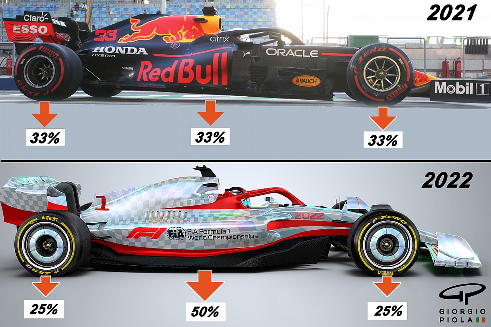

FIA, ECCO LE REGOLE PER IL 2026, INIZIA UNA NUOVA ERA IN F1
01 Ottobre 2024
A partire dal 2026, le monoposto di Formula 1 subiranno una vera rivoluzione in termini di progettazione, performance e sicurezza, secondo le nuove linee guida della FIA. Le vetture saranno più leggere di 30 kg (arrivando a 768 kg), più corte e strette rispetto ai modelli attuali, con una riduzione del passo a 3.400 mm e della larghezza a 1.900 mm. I cambiamenti principali riguardano la power unit, che vedrà un equilibrio del 50% tra motore endotermico ed elettrico, con quest’ultimo che avrà un ruolo significativamente maggiore. La potenza elettrica aumenterà enormemente, passando da 120 kW a 350 kW, mentre la parte endotermica scenderà da 550-560 kW a 400 kW. L'aerodinamica sarà un elemento chiave, con l’introduzione dell'aerodinamica mobile e due modalità innovative: la X-Mode, per ridurre la resistenza all'avanzamento sui rettilinei, e la Z-Mode, per massimizzare la deportanza in frenata e curva. Questo sistema sostituirà il DRS, che verrà eliminato. In compenso, sarà introdotto il Manual Override, un sistema che permetterà ai piloti di utilizzare una maggiore quantità di energia elettrica in rettilineo, favorendo i sorpassi. Inoltre, la riduzione della deportanza del 30% e della resistenza aerodinamica del 55% contribuirà a rendere le vetture più efficienti. Anche la sicurezza sarà migliorata, con nuove strutture deformabili, maggiore protezione laterale e un incremento della resistenza del roll hoop a 20 G. I pneumatici rimarranno da 18 pollici, ma saranno più stretti rispetto a quelli attuali. Queste modifiche puntano a creare una Formula 1 più sostenibile, sicura e spettacolare, con motori più potenti e una maggiore enfasi sull'elettrificazione e l’efficienza aerodinamica.
Fonte: Regolamenti tecnici e sportivi ufficiali FIA (Fédération Internationale de l'Automobile).
L'EFFETO SUOLO IN F1
14 settembre 2024

L'effetto suolo è un fenomeno aerodinamico che sfrutta la differenza di pressione tra la parte superiore e inferiore di una vettura per generare una forza verso il basso, detta deportanza. In pratica, l'aria che passa sotto la vettura viene accelerata, creando una zona di bassa pressione che "risucchia" la macchina verso l'asfalto.
Vantaggi dell'effetto suolo:
Aumento dell'aderenza meccanica: la maggiore deportanza permette alle gomme di aderire meglio alla pista, migliorando la trazione in accelerazione e la tenuta di strada in curva.
Riduzione del rollio: il rollio è il movimento di inclinazione della vettura in curva. L'effetto suolo aiuta a contrastare questo movimento, rendendo la vettura più stabile.
Miglioramento delle prestazioni in curva: grazie alla maggiore aderenza e stabilità, le vetture possono affrontare le curve a velocità più elevate, riducendo i tempi sul giro.
Dopo essere stato bandito per diversi anni a causa di incidenti mortali legati a eccessive velocità in curva, l'effetto suolo è tornato a far parte del regolamento della Formula 1 a partire dalla stagione 2022. Questa scelta è stata dettata dalla volontà di creare vetture più spettacolari, in grado di seguire più da vicino le vetture avversarie e di offrire gare più avvincenti. Le monoposto di nuova generazione presentano delle caratteristiche aerodinamiche completamente riviste, con fondi piatti e tunnel venturi che incanalano l'aria sotto la vettura e generano l'effetto suolo. Questa nuova configurazione ha portato a un cambiamento radicale nell'aspetto delle vetture, che sono diventate più basse e con un fondo più ampio.
Il ritorno dell'effetto suolo ha portato numerosi vantaggi per gli spettatori:
Gare più avvincenti: le nuove monoposto sono in grado di seguire più da vicino le vetture avversarie, creando più opportunità di sorpasso e rendendo le gare più emozionanti.
Vetture più spettacolari: il nuovo design delle vetture è più aggressivo e aerodinamico, rendendole più affascinanti da vedere in pista.
Maggiore sostenibilità: le nuove regole aerodinamiche hanno l'obiettivo di ridurre il consumo di carburante e l'impatto ambientale della Formula 1.
L'effetto suolo è una tecnologia fondamentale per la Formula 1, in grado di migliorare le prestazioni delle vetture e di offrire spettacoli sempre più emozionanti. Il suo ritorno nel 2022 ha segnato l'inizio di una nuova era per questo sport, caratterizzata da vetture più veloci, più spettacolari e più sostenibili.